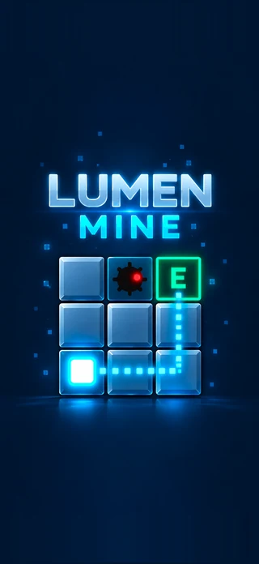
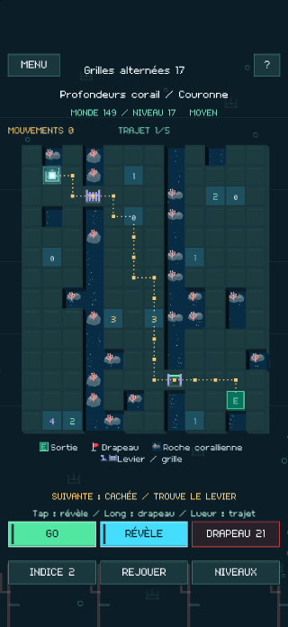
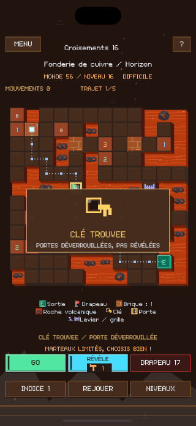
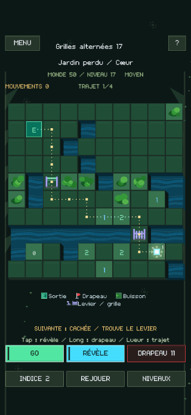
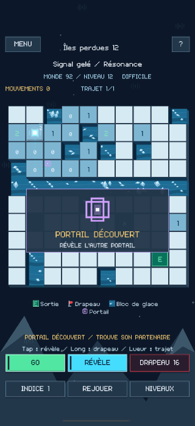
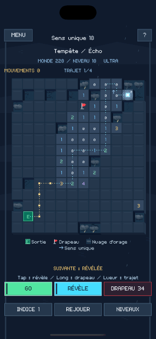
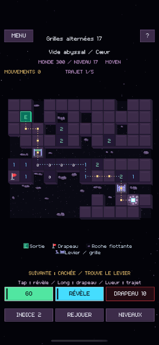

Chaque case change le trajet.
Découvre une case pour lire son indice. Pose des drapeaux sur les mines, puis appuie sur GO pour faire avancer la lueur. GO END la conduit jusqu’à la sortie dès qu’un trajet sûr a été révélé.
LUMEN MINE
Lis les chiffres, signale les mines et découvre un trajet sûr jusqu’à la sortie. Tu prépares le chemin. La lueur le suit.
Découvre une case pour lire son indice. Pose des drapeaux sur les mines, puis appuie sur GO pour faire avancer la lueur. GO END la conduit jusqu’à la sortie dès qu’un trajet sûr a été révélé.
Casse des briques avec un nombre limité de marteaux, ouvre des portes, actionne des leviers et traverse des portails. Utiliser une clé sur une porte peut laisser l’autre verrouillée.
Tu peux atteindre la sortie sans découvrir toutes les cases. Pour un résultat parfait, résous une plus grande partie du plateau. Tes performances te rapportent des étoiles.
Lumen Mine · YouTube
Découvrez ce court aperçu du jeu, puis explorez les captures et les différents mondes.









Explore les trois premiers mondes gratuitement. Un achat intégré unique débloque le jeu complet, soit 300 mondes et 6 000 niveaux au total.